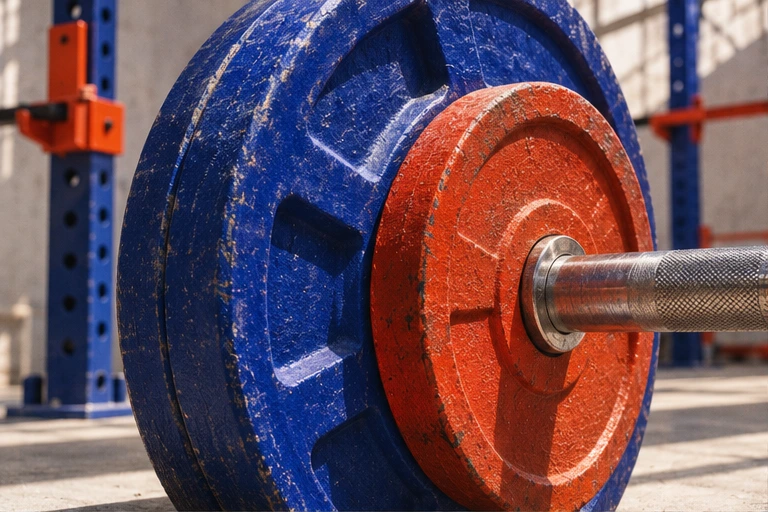
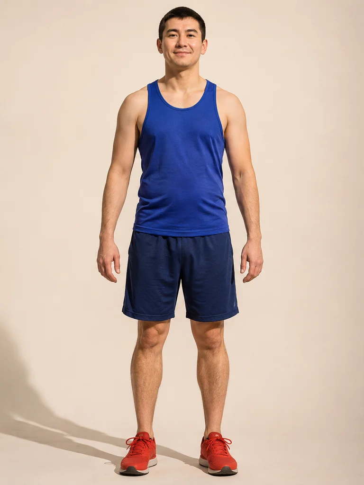

Мозг и тело
ИИ-модель выбирает следующий шаг. Харнес даёт ей тело, которое этот шаг выполняет. Посмотрим, как оно устроено.
ИИ Качалка · шпаргалка участника
Первый сбор · 22 ноября · 12:00–14:00

До первого подхода
Открываешь агента впервые. У него уже есть «руки» и «ноги», и ими можно работать. У каждого агента своя базовая форма.
 CodexClaude Code
CodexClaude Code Kimi Code
Kimi Code
Устройство агента
ИИ-модель выбирает следующий шаг. Харнес даёт ей тело, которое этот шаг выполняет. Посмотрим, как оно устроено.
Агент выбирает шаг, действует и смотрит, что получилось. Затем решает, продолжать или остановиться.
Встроенные инструменты определяют, что агент умеет делать. Подключения дают ему доступ к другим сервисам.
Всё, что модель видит в этот момент. Здесь лежат инструкции, рабочие материалы и навыки, нужные для текущего подхода.
Права определяют границы действий. Ты решаешь, где агент действует сам и когда ему нужно твоё подтверждение.
Память сохраняет то, что пригодится в следующий раз. Проверки показывают, можно ли доверять результату.
В зале мы постепенно настраиваем харнес под себя. У агента появляются освоенные приёмы, нужные подключения и понятные границы самостоятельности.

Знакомство · 90 секунд каждому
Имя, сфера, поток. Чем занимаешься большую часть рабочей недели?
Что с ИИ у тебя получается? Начинающие могут назвать первую попытку.
Один вопрос, приём, повторяющаяся задача или свой проект.
Какой опыт у тебя уже есть и кому он может пригодиться?
После выпуска
После курса остались рабочие вопросы. Ответы и находки расходятся по чатам разных потоков, приёмы забываются без практики. Мы собрали выпускников в одном зале, чтобы было где тренироваться, к кому обратиться и куда вернуться за решением.
Карта клуба
Две очные встречи в месяц
Поддержка своей группы
В зале · 01
Как взять новый инструмент в работу?
Мы заранее тестируем новинки. На сбор выносим то, что решает рабочую задачу и стоит времени на освоение.
Смотришь, какие условия нужны инструменту. Пробуешь его на своём материале, меняешь настройки и проверяешь результат.
В зале · 02
Как выглядит процесс, который уже передали ИИ?
Практика, который заменил ручную работу на всём участке. Он сам отвечал за внедрение и знает, что пошло не по плану.
Как было до внедрения. Что теперь делает ИИ от входа до результата. Где осталась проверка человеком.
Рабочую схему и границы её применения. Детали можно уточнить напрямую у того, кто её запустил.
В зале · 03
Горячий стул для твоего проекта
С идеей, прототипом или развилкой. Сформулируй один вопрос, на который тебе сейчас нужен ответ.
Участники задают вопросы, делятся похожим опытом и помогают выбрать, что проверить первым.
Если хочется продолжить, приноси результат на следующий сбор. Можно участвовать и со стороны, задавая вопросы другим.
Между встречами · 04
Кто на страховке?
В чате группы разбирают подключения, настройки и сбои. Знают, что вы проходили на курсе и с какого шага продолжить.
Собирает вопросы, направляет их команде и публикует анонсы. У каждой группы свой администратор.
Ведёт встречи и собирает вопросы, которые стоит разобрать вместе со всем залом.
Между встречами · 05
Дневник тренировок группы
Пропустил сбор или хочешь повторить отдельный приём — запись хранится в базе твоей группы.
Сохраняем проверенные инструкции, навыки и настройки. Материалы разложены по направлениям: визуал, блогинг, эффективность и управление.
Когда способ работы меняется, обновляем материал. К нему можно вернуться и после встречи.
Между встречами · 06
Кто тренируется рядом?
В группе встречаются выпускники разных потоков. На знакомстве слышно, кто что уже делал и в чём может подстраховать.
Можно найти напарника, попросить обратную связь или предложить совместную работу. Команда и участники остаются на связи между сборами.
Для тех, кто хочет делиться результатами, предусмотрены разборы и возможность выступить на мастер-классе или в эфире.
Два сбора в месяц
В чате появляется анонс с темой. Можно заранее прислать вопрос, чтобы ведущий или гость успел подготовиться.
Собираемся своей группой. В анонсе уже указано, что в программе: практика, эксперт или разбор участника.
Решения и запись уходят в базу. Вопросы продолжаем обсуждать в чате с командой.
Открой запись в базе своей группы и приходи на следующий сбор.
В перспективе
Хотим объединить выпускников разных двадцаток в общей группе. У каждой двадцатки сохранятся свой чат и очные тренировки.
Планируем отдельный канал с коротким отбором новостей: что изменилось, что мы уже проверили и кому это пригодится. Среди небольших рубрик может появиться «промпт дня».
Обсуждаем встречу всего клуба раз в квартал, чтобы группы могли обменяться опытом и показать результаты.
Клубный абонемент
За месяц: две очные встречи, поддержка команды, записи и база знаний своей группы. Место в группе закрепляется на оплаченный месяц. Если пропускаешь встречу, её запись остаётся в базе. Пропуск не переносит срок абонемента.
Первая встреча открытая
Голос зала
Какой из шести блоков ты бы выбрал уже на следующей встрече?
Какой инструмент хочется адаптировать, чей процесс увидеть или какой вопрос обсудить?
Что помогло бы тебе возвращаться в зал каждый месяц?
Финиш
10 000 ₽ в месяц
Пришлём счёт и реквизиты.
Оплата подтверждает место в твоей группе.
Дату и тему объявим в чате.